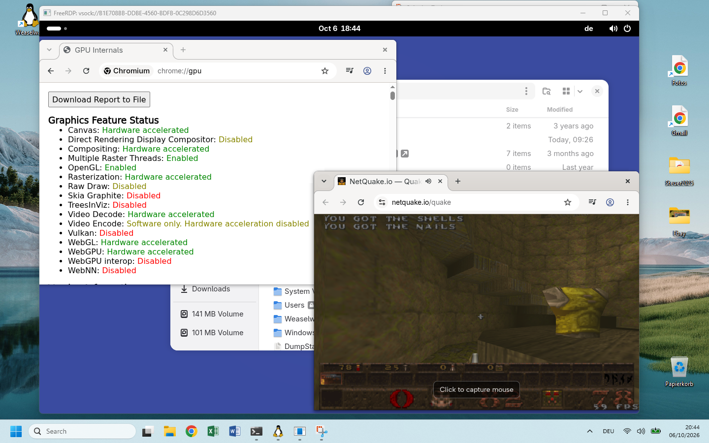

A Linux desktop on WSL2, rendered on your GPU and shown in a window on Windows.
Work in GNOME, Plasma or another Wayland desktop on a Windows laptop, on up to four monitors. It runs inside WSL2 and feels as fast as a local desktop.

WSL already runs Linux GUI apps through WSLg. WSLg shows single app windows, though, and has no way to show a whole desktop. Weaselway is for developers whose company gives them a Windows laptop but who want to work in Linux. It also lets you try a Linux desktop without installing a second operating system. You get GNOME's overview, Plasma's panels or a tiling compositor such as Hyprland.
Weaselway still needs WSLg turned on, which is the default. The viewer receives the frames through shared memory that WSL sets up only for WSLg.
OpenGL and Vulkan run on Direct3D 12 through Mesa, on the GPU that Windows shares with WSL. Weaselway's Mesa adds more than 150 fixes and missing features to these drivers.
sway, Hyprland, niri and other Wayland compositors start through a session script you write.
Show the desktop as up to four monitors, each in its own window that you can place on any Windows monitor.
Swipe and pinch gestures with three or more fingers reach the desktop, so its own gestures work.
Sound plays on Windows, and Linux apps can use the microphone and a USB camera. Video calls work.
Copy and paste text, HTML and images between Windows and Linux apps.
Attach USB devices shared with usbipd-win. Common USB Bluetooth adapters work, including with Bluetooth headphones.
The desktop shows the battery charge that Windows reports.
You need an x86_64 Windows machine with WSL2 and a GPU whose Windows driver supports WSL.
Download the GNOME or Plasma image from the latest release and import it in PowerShell. Everything comes prebuilt. Existing NixOS-WSL systems can add the NixOS module instead.
wsl --install --from-file \
nixos-weaselway-gnome-<version>.wsl \
--name Weaselway
wsl -d WeaselwayThe script adds weaselway to the GNOME, Plasma or Hyprland packages from Ubuntu. It compiles Mesa and the compositor on your machine.
git clone https://github.com/weaselway/weaselway
cd weaselway
./distro/install.pyThe script adds weaselway to the GNOME, Plasma or Hyprland packages from Arch Linux or CachyOS. It compiles Mesa and the compositor on your machine. Arch's WSL image needs a user and a few packages first.
git clone https://github.com/weaselway/weaselway
cd weaselway
./distro/install.pyThen start the desktop and open it in a window.
ww-install-viewer-link puts a shortcut on the Windows desktop that does both in one click.
ww-start-session
ww-start-viewerFour parts carry each frame from the Linux desktop to your Windows screen.
The compositor runs unmodified. The dxgdrm kernel module gives it a virtual display, which the compositor drives like a monitor through KMS (the kernel interface for display output). Mesa's d3d12 driver runs OpenGL and Vulkan on Direct3D 12, so the frames are drawn on your GPU.
The weaselwayd daemon reads each finished frame and passes it through shared memory to the viewer, a Windows build of FreeRDP (an open-source Remote Desktop client). Keyboard, mouse, touchpad and audio use the same connection. The architecture overview has the details.